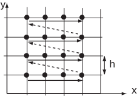

3 Systems of equations
In order to obtain accurate results over a large number of interior points, we need to decrease compared to the values used in the Examples above.
The diagram below shows a case where 5 steps are used in each direction on a square domain. It follows that there will be unknowns. Positioning the stencil over each position where is unknown will give the right number of equations, and the order we take the 16 points is indicated by the arrows on the diagram.

It follows that there will be a system of equations involving
with a right-hand side that depends on the function and the boundary conditions.
There is a great deal of structure in this matrix. Most of the elements are zero. Apart from that there are five non-zero diagonal bands (from top-left to bottom-right), each corresponding to a component of the five-point stencil. The main diagonal is made up of repetitions of , the coefficient from the centre of the 5-point stencil. Immediately above and below the main diagonal are terms that come from the easterly and westerly extremes of the stencil, respectively. Separated from the tridiagonal band are two outlying lines of 1s. The uppermost sequence of 1s is due to the northerly point on the stencil and the lowermost is a consequence of the southerly point. It is worth noting that much of this structure failed to emerge in the numerical examples considered earlier. This was because the mesh was so coarse (that is, was so large) that the stencil was always in touch with the boundary. It is more usual that most placings of the stencil will produce an equation involving five unknowns.
In general, then, an implementation of the five-point stencil will ultimately involve having to solve a potentially large number of simultaneous equations. We have seen in HELM booklet 30 methods for dealing with systems of equations, for example we saw the Jacobi and Gauss-Seidel iterative methods. It is possible, in the present application, to implement these methods directly via the numerical stencil. The next subsection describes how this may be achieved.